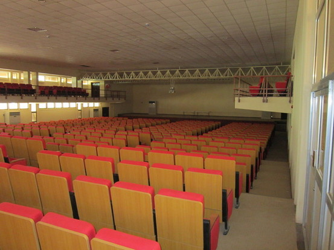

Above are two views of the same lecture hall.
This has 150 seats. It would be adequate with
a much better board (the current one is too small
and possibly too far back). It might also benefit
from a generator.
Temperatures in June can get 37 degrees or more.
The Vice-Chancellor promised that we would have an
adequate, recently rennovated lecture hall with
AC and a generator. Perhaps
details of this should be settled upon?
To the right is a huge hall (seats 500)
which is much too large, but has AC,
and after rennovation has extra meeting rooms.
This is not appropriate for us.
|  |